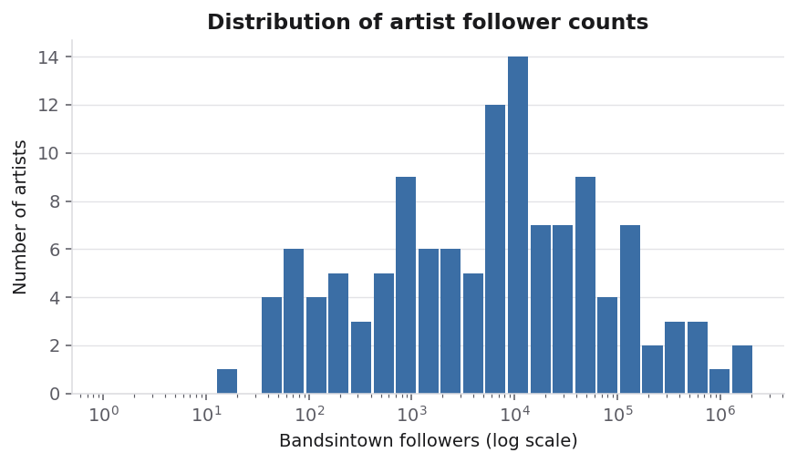
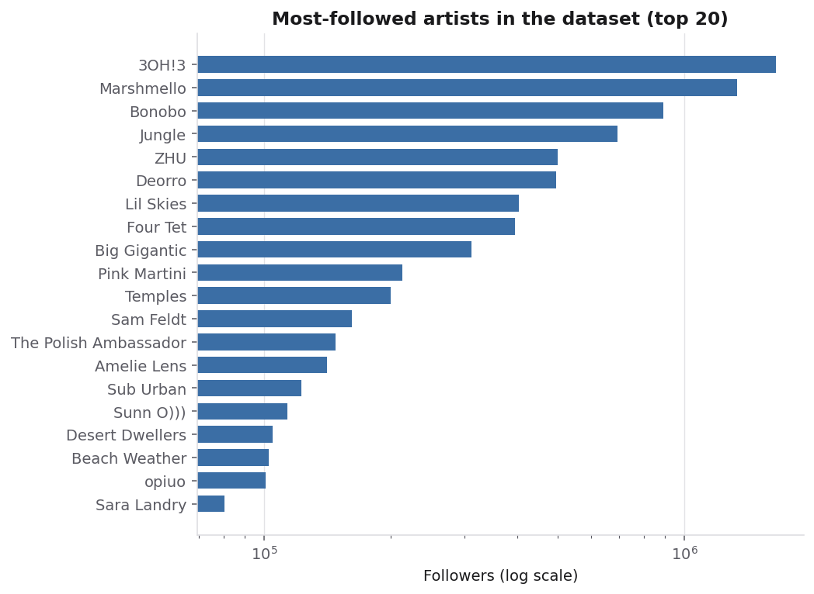
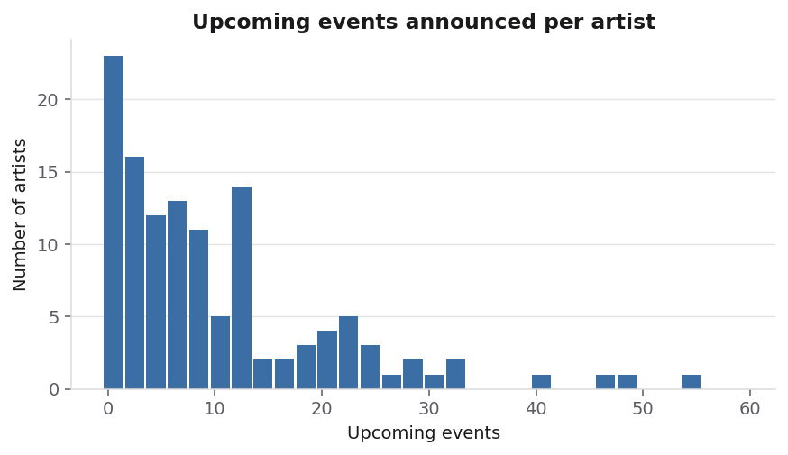
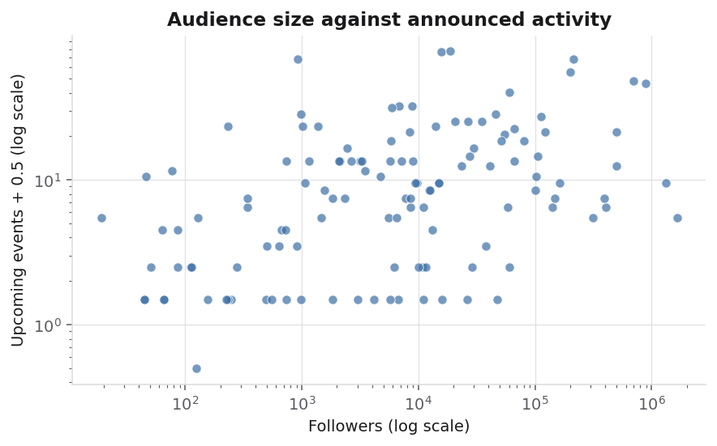
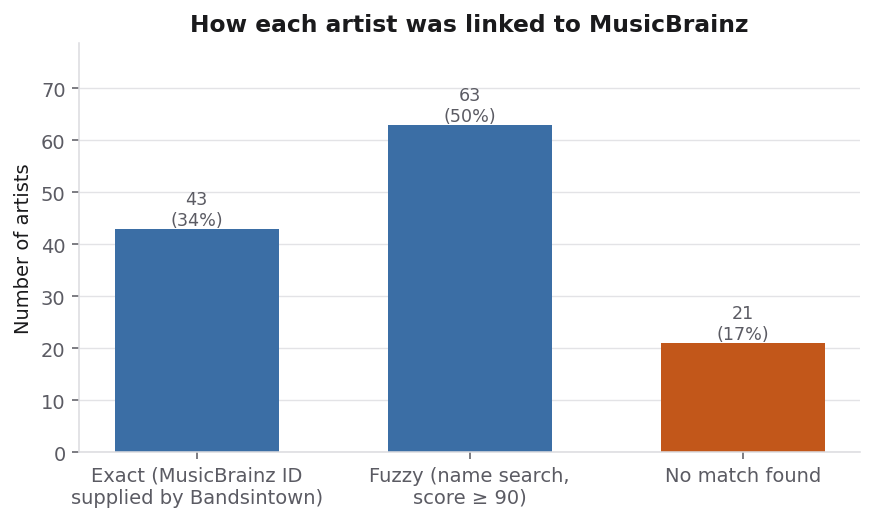
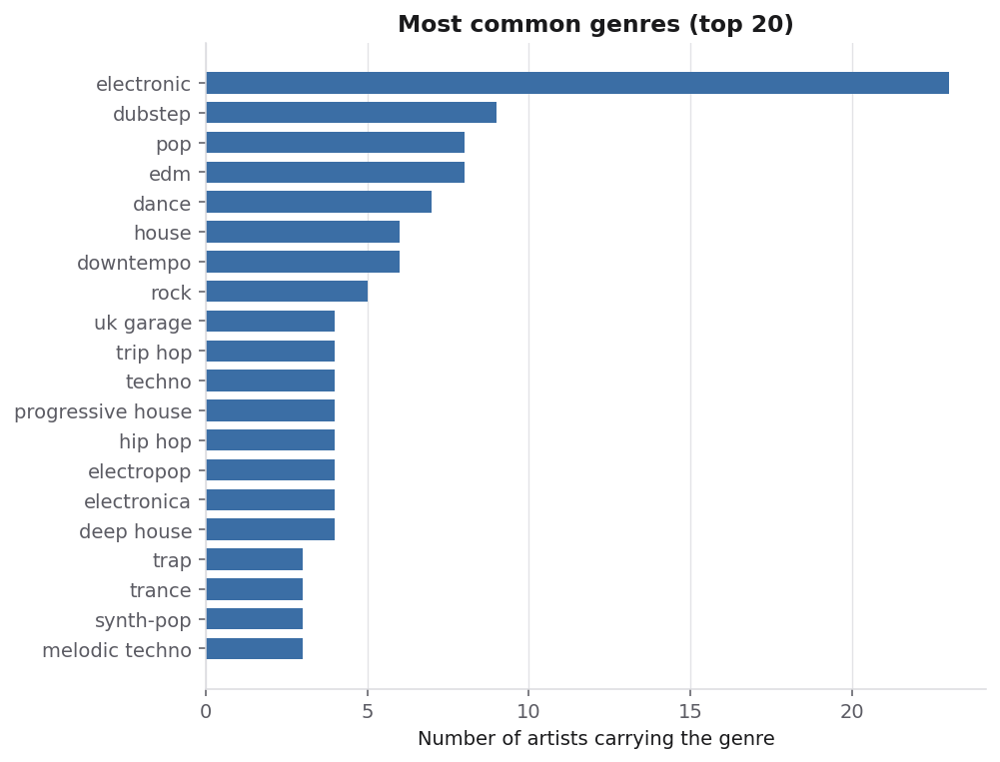
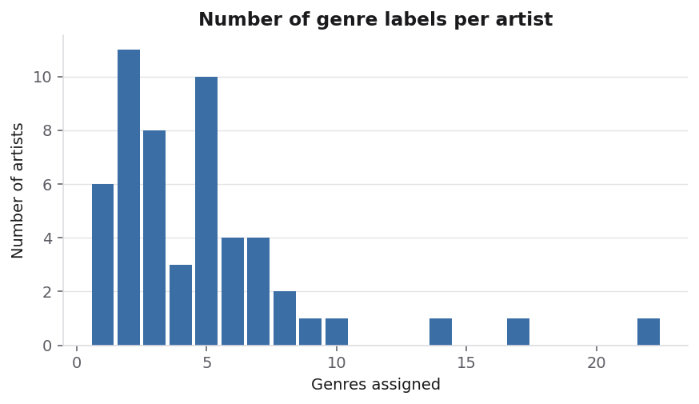
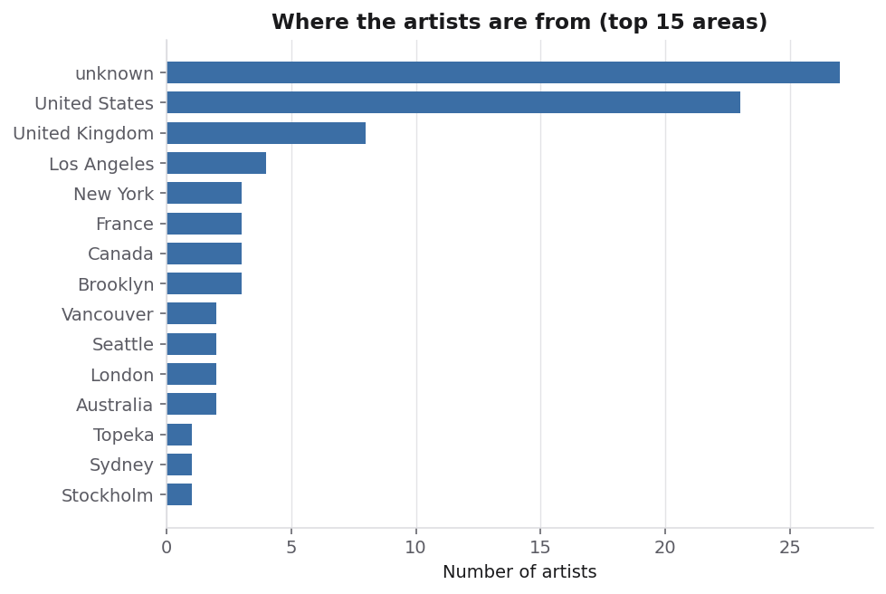
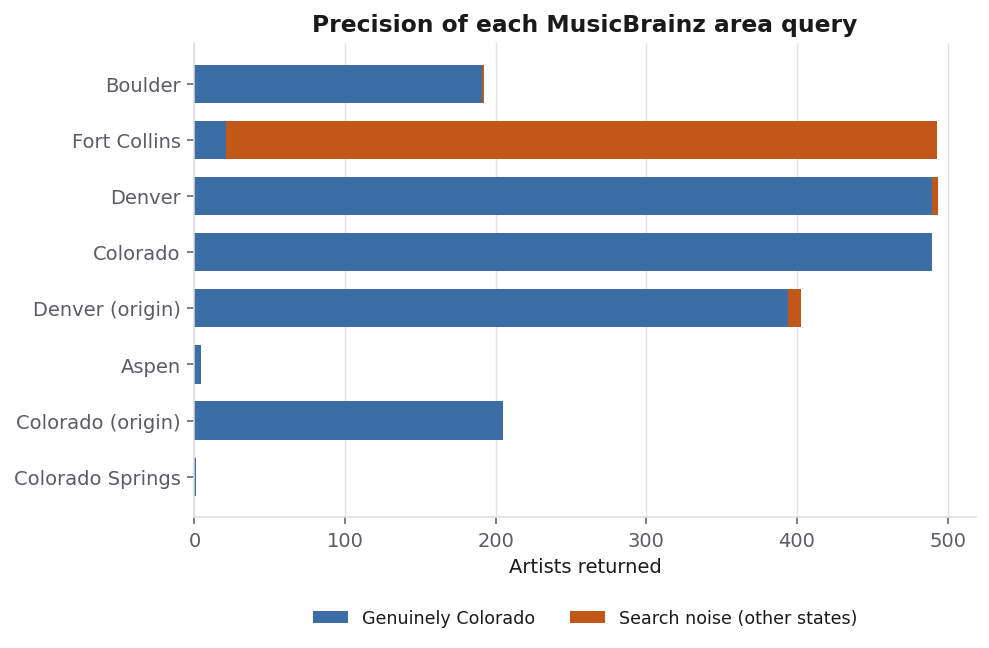

Data Preparation and Exploratory Data Analysis
Where the data comes from, how it was gathered and cleaned, and what it looks like.
How, Where, and Why the Data Was Gathered
This project studies artists performing electronic music in Colorado. Two independent sources were combined: Bandsintown, a live-music platform, for the artists appearing on Colorado electronic listings and their audience figures; and MusicBrainz, an open music encyclopaedia, for genre classification and geographic origin. Neither source alone is sufficient, and their disagreements are informative in their own right.
Source One: Bandsintown
Base URL: https://rest.bandsintown.com ·
API documentation
· Authentication: a single app_id query parameter issued through a
Bandsintown for Artists account.
| Endpoint | Returns | Status in this project |
|---|---|---|
GET /artists/{artistname} |
Artist profile: identifier, name, MusicBrainz id, follower count, upcoming event count, platform links | Works; the backbone of the dataset |
GET /artists/id_{artist_id} |
The same profile, addressed by numeric identifier | Works; used for all collection |
GET /artists/{artistname}/events |
Event list with venue, date and full lineup | Restricted — see below |
Example GET request
GET https://rest.bandsintown.com/artists/id_15559410?app_id=APP_ID
Response (abbreviated):
{
"id": "15559410",
"name": "MGNA Crrrta",
"mbid": "",
"tracker_count": 8821,
"upcoming_event_count": 32,
"image_url": "https://photos.bandsintown.com/large/...jpeg",
"links": [
{ "type": "spotify", "url": "https://open.spotify.com/artist/..." }
]
}A documented limitation of this source
all, upcoming, past, an explicit range and omitted
entirely, with and without a trailing slash. Every combination returned an empty list.
Bandsintown's terms state that an artist key is linked to a single artist unless
otherwise authorised, which is consistent with this behaviour.
The consequence is that this project has no event, venue or performance-lineup data, and the analysis is therefore at the level of the artist rather than the concert. Access for research purposes has been requested from the platform.
Identifying which artists to collect
The API provides no search or enumeration capability: it returns data about an artist whose identifier is already known, but cannot answer the question "which electronic artists play in Colorado". Artists were therefore identified from the platform's public city and genre listing pages, which embed structured schema.org event data including a link to each performing artist's page:
https://www.bandsintown.com/c/{city}/{date-range}/genre/electronicTwenty-four Colorado cities were examined across every available date window, from Fort Collins through the Front Range to Colorado Springs and out to the mountain towns. A notable finding is that every city and every date range returned an identical set of artists, indicating that the platform serves a single Denver-region feed for this genre rather than city-specific listings. The resulting list of 126 artists is therefore close to the complete public listing surface for electronic music in this market, not a sample truncated early.
Source Two: MusicBrainz
Base URL: https://musicbrainz.org/ws/2 ·
API documentation ·
No authentication required; data is released under open licences. Requests are rate
limited to one per second as the service requires.
GET https://musicbrainz.org/ws/2/artist/{mbid}?inc=tags+genres&fmt=json
GET https://musicbrainz.org/ws/2/artist?query=area:"Colorado"&limit=100&fmt=json
MusicBrainz supplies what Bandsintown does not: genre classification, artist type,
formation year, and an area field giving geographic origin. It was used two
ways. First, to enrich every artist already collected. Second, and more importantly, to
search directly for artists whose recorded area lies in Colorado — an independent
sample that does not derive from the first source at all, and which therefore provides a
genuine second view of the same population rather than an annotation of the first.
Raw Data
Every API response is written to disk exactly as received, before any parsing, as compressed newline-delimited JSON. Each stored record carries the request URL with credentials removed, the retrieval timestamp, the HTTP status and the untouched response body. This makes every table below reproducible from the original bytes, and means a parsing correction requires re-reading rather than re-collecting. That property was used in practice during this project: when a loading fault was found, all 126 artist records were rebuilt from stored responses without a single additional API call.

Cleaned Data

Link to the cleaned data — exported as CSV: artists, follower snapshots, MusicBrainz records, genre tags, and the Colorado sample.
Cleaning and Preparation Steps
Absent values arrive as empty strings, not nulls
Bandsintown returns "" rather than null for a missing MusicBrainz
identifier. Because an empty string is not null, it passed through a merge intended to
preserve existing values and would have overwritten valid identifiers with blanks. Empty
strings are now converted to nulls on load, and completeness is measured on that basis.
Linking two sources without a shared key
Only a minority of artists carry the MusicBrainz identifier that would join the sources exactly. The remainder are matched by name search, accepting the highest-scoring candidate only when its score reaches 90. Both the method and the score are stored with every row, so fuzzy matches can be excluded from any analysis that requires certainty. Figure 6 reports this split rather than presenting a single combined coverage figure, because the two groups do not carry equal confidence.
Geographic queries return other states
An unquoted multi-word area search tokenises: area:Fort Collins initially
returned 2,012 results by matching "Collins" anywhere. Quoting the value reduced this to
200. Even quoted, searches return towns of the same name in other states, so each returned
artist is verified against a list of Colorado places and rejected if a competing state is
named, which correctly separates Denver, Colorado from Denver, Pennsylvania. Rejected rows
are retained with a flag rather than deleted, so the filtering is auditable. Figure 11
shows the precision of each query: 80% of results were genuine.
Duplicates and repeated collection
Artists appear on multiple listing pages and are identified by numeric identifier rather than by name, so duplicates are removed on insertion. Follower counts are stored as an append-only series keyed by observation time rather than overwritten, so that repeated collection accumulates history instead of discarding it.
Exploratory Visualizations










Code
All collection, cleaning and figure code is written in Python. The core packages are
requests for retrieval, sqlite3 for storage,
beautifulsoup4 for parsing structured data out of listing pages, and
matplotlib for figures.
- All code for this section
- bit_client.py — rate-limited API client with raw response capture
- seed_names.py — resolves the artist list against the API
- crawl.py — collection loop
- normalize.py — converts raw responses into clean tables
- enrich_musicbrainz.py — MusicBrainz enrichment and Colorado search
- diagnose_events2.py — the 24-variant test establishing the events restriction
- make_figures.py — generates every figure on this page
- export_data.py — exports the CSV files linked above